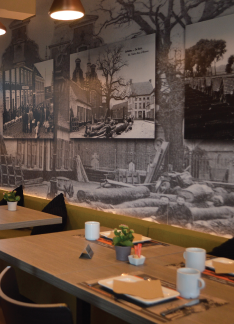
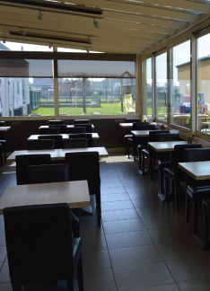
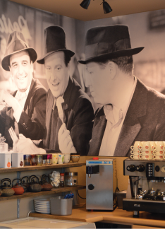

Ontbijtformules
Start de dag met een van onze uitgebreide ontbijten — van kinderontbijt tot de rijkelijke Florentine met cava.
Vanaf 7 €

Restaurant · Tearoom · Terras
In het groene Oedelem geniet u van een gezellige lunch, verse pannenkoeken en wafels op ons zuidgericht terras met zicht op de velden en weilanden. Met speeltuin, dierenpark en een ruime veranda — de ideale plek voor jong en oud.
Dinsdag t.e.m. vrijdag · 8u30 – 17u30
Over ons
In een ver verleden — begin 1900 — was dit de Herberg de Boomgaard. Sinds oktober 2007 baten wij hier met veel liefde onze zaak De Boomgaard uit. Met 46 plaatsen in onze zaal, 40 plaatsen in de veranda en een ruim terras met 55 plaatsen bieden we onze gasten de ideale mix van mogelijkheden.
Ons terras is zuidgericht — zon en warmte verzekerd. U geniet er van het rustgevende uitzicht op de velden en weilanden van Oedelem. De dieren bezorgen de kinderen (en ook uzelf) een aangename verstrooiing, en de kleintjes kunnen zich uitleven in onze speeltuin.
's Namiddags geniet u van verse wafels, pannenkoeken en gebak van de dag. We bieden u bovendien een uitgebreide keuze aan de kaart en twee keuzemenu's.


Wat we bieden
Van een uitgebreid ontbijt tot een gezellige lunch, en 's namiddags verse wafels en pannenkoeken op het terras.
Start de dag met een van onze uitgebreide ontbijten — van kinderontbijt tot de rijkelijke Florentine met cava.
Vanaf 7 €
Verse salades, pasta's, vis- en vleesgerechten, snacks en kroketten — met salade en frietjes.
Keuken doorlopend
's Namiddags geniet u van verse wafels, pannenkoeken, coupes ijs en gebak van de dag.
Namiddag
De ideale stopplaats op ~300 m van knooppunt 81 van het fietsnetwerk "Brugse ommeland".
Terras & dorstlesser
Ontbijt
Rustig tafelen met vers brood, beleg en een warme drank. Reserveer je ontbijt bij voorkeur op voorhand.
Fotogalerij
Ons terras, de veranda en enkele van onze gerechten. Klik op een foto om ze groter te bekijken.
Openingsuren
Jaarlijks verlof: maandag 6 juli t.e.m. maandag 27 juli. We zijn terug open op dinsdag 28 juli.
| Maandag | Tijdelijk gesloten |
|---|---|
| Dinsdag | 8u30 – 17u30 |
| Woensdag | 8u30 – 17u30 |
| Donderdag | 8u30 – 17u30 |
| Vrijdag | 8u30 – 17u30 |
| Zaterdag | Gesloten |
| Zondag | Gesloten |
Openingsuren
Dinsdag t.e.m. vrijdag open van 8u30 tot 17u30 voor ontbijt, lunch, wafels en pannenkoeken.
Zaterdag en zondag zijn we gesloten. Maandag tijdelijk gesloten.
Reserveren? Bel 050 68 69 67Reserveren & contact
Je vindt ons in de Bruggestraat in Oedelem, vlak bij de velden. Ruime parking en overal rolstoeltoegankelijk.
Adres Bruggestraat 125 · 8730 Oedelem
Telefoon & reservatie 050 68 69 67
E-mail info@restodeboomgaard.be
Reservaties reservatie@restodeboomgaard.be
Facebook Volg De Boomgaard
Fietsers ± 300 m van knooppunt 81 — "Brugse ommeland"